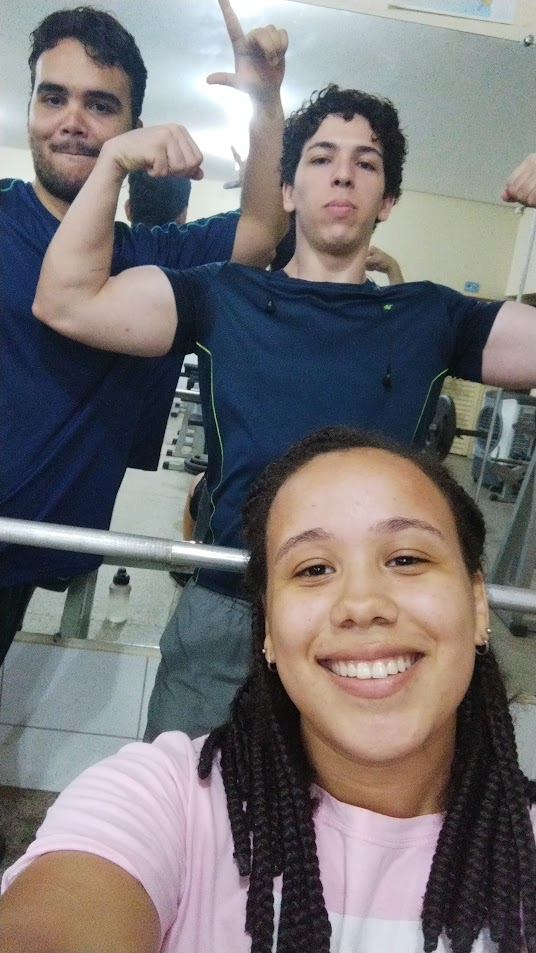
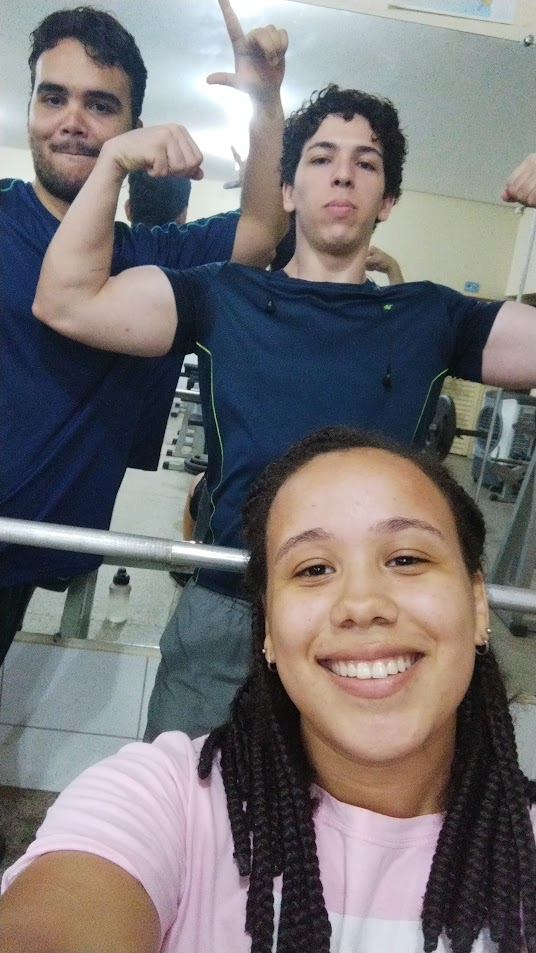

Farley
Farley é aquele amigo tranquilo, de fala calma e presença acolhedora, que transmite paz até nos dias mais
corridos da faculdade.
Ele é o tipo de pessoa que está sempre disposto a ajudar, com paciência e generosidade — e isso fez (e faz!)
toda a diferença em nossa caminhada.
Foram muitas as vezes em que eu e Géssica precisávamos de ajuda com alguma matéria, e lá estava o Farley,
pronto para socorrer, explicar com calma e garantir que a gente entendesse tudo direitinho.
Seu apoio constante nos momentos difíceis nos mostrou o verdadeiro valor de uma amizade solidária e
generosa.
Ter o Farley por perto é saber que nunca estamos sozinhos. Sua amizade é leve, verdadeira e repleta de
companheirismo.
Sou muito grata(o) por ter vivido tantos momentos ao lado dele — um amigo que ensina, acolhe e faz a vida
ser mais simples e bonita.
Momentos com Nanda 📸
 
